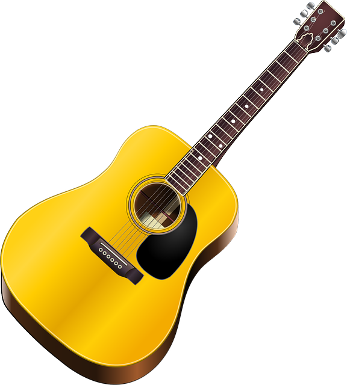

About Me
Put it in, leave it alone. Here we're limited by the time we have. Don't fiddle with it all day. Brown is such a nice color. You can create anything that makes you happy. Just let go - and fall like a little waterfall. Anytime you learn something your time and energy are not wasted. We touch the canvas, the canvas takes what it wants. Fluff that up. Let your imagination be your guide.
Let your heart take you to wherever you want to be. Put your feelings into it, your heart, it's your world. That's a crooked tree. We'll send him to Washington. If I paint something, I don't want to have to explain what it is. Think about a cloud. Just float around and be there. Painting should do one thing. It should put happiness in your heart. It's beautiful - and we haven't even done anything to it yet. Let your imagination just wonder around when you're doing these things. Just beat the devil out of it. The shadows are just like the highlights, but we're going in the opposite direction.
Let your hobbies guide you!
Past Experiences

You can't have light without dark. You can't know happiness unless you've known sorrow. Little short strokes. The very fact that you're aware of suffering is enough reason to be overjoyed that you're alive and can experience it. I guess I'm a little weird. I like to talk to trees and animals. That's okay though; I have more fun than most people. Trees grow in all kinds of ways. They're not all perfectly straight. Not every limb is perfect. Any little thing can be your friend if you let it be. Don't forget to tell these special people in your life just how special they are to you.
Once you learn the technique, ohhh! Turn you loose on the world; you become a tiger. Let's build some happy little clouds up here. I really recommend you use odorless thinner or your spouse is gonna run you right out into the yard and you'll be working by yourself. Nothing's gonna make your husband or wife madder than coming home and having a snow-covered dinner. Fluff it up a little and hypnotize it. I like to beat the brush.
Hobbies

Anything you want to do you can do here. This painting comes right out of your heart. In life you need colors. This is your world, whatever makes you happy you can put in it. Go crazy. Steve wants reflections, so let's give him reflections. You don't have to spend all your time thinking about what you're doing, you just let it happen. I want everbody to be happy. That's what it's all about.
Let's put a touch more of the magic here. All you have to do is let your imagination go wild. You can't make a mistake. Anything that happens you can learn to use - and make something beautiful out of it. That's what painting is all about. It should make you feel good when you paint. Follow the lay of the land. It's most important. Here's another little happy bush That's what makes life fun. That you can make these decisions. That you can create the world that you want.